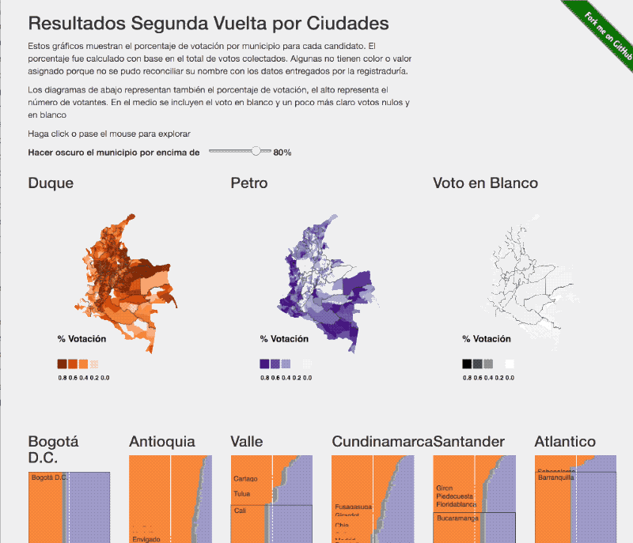

<!DOCTYPE html>
<html lang="en"></html>
<head>
  <meta charset="UTF-8"/>
  <title>Resultados Segunda Vuelta Presidencial 2022</title>
  <meta name="viewport" content="width=device-width, initial-scale=1, shrink-to-fit=no"/>
  <link rel="stylesheet" href="css/bootstrap.min.css" integrity="sha384-Gn5384xqQ1aoWXA+058RXPxPg6fy4IWvTNh0E263XmFcJlSAwiGgFAW/dAiS6JXm" crossorigin="anonymous"/>
  <link rel="stylesheet" href="./css/main.css"/>
  <link rel="stylesheet" type="text/css" href="css/scroller.css"/>
</head>
<body></body>
<div class="container"><span>
    <a href="https://github.com/john-guerra/resultadosPrimeraVuelta2022_historia"></a>
    </span>
  <div class="row">
    <div class="col-md-12 col-xs-12">
      <h1>Resultados Elecciones Colombia <br/> Segunda Vuelta 2022</h1>
    </div>
  </div>
  <div class="row" id="graphic">
    <div id="vis">
      <div style="display:none;"></div>
      <div class="col-xs-12 col-md-4" id="vTooltip">
        <h3>Tooltip</h3>
        <p>content</p>
        <div id="barChart"></div>
      </div>
    </div>
    <div class="col-md-8" id="visFiller"></div>
    <div class="col-xs-12 col-md-4" id="sections">
      <section class="step">
        <h2 class="title">¿Cómo votaron los colombianos en la segunda vuelta presidencial, 2022?</h2>
        <p>Este es un análisis de la votación de los municipios colombianos en la segunda vuelta de las elecciones presidenciales.</p>
        <p>Desplace la página hacia abajo para continuar.</p>
      </section>
      <section class="step">
        <h2 class="title">¡Visualicemos los resultados!</h2>
        <p>¿Pero cómo? Quizá con un mapa de Colombia.</p>
      </section>
      <section class="step">
        <h2 class="title">Agreguemos colores</h2>
        <p>Podemos usar colores para diferenciar quién ganó en cada departamento. Si un departamento votó en su mayoría por <span class="colorHernandez">Hernández</span> irá en <span class="colorHernandez">naranja</span>, si votó en su mayoría por <span class="colorPetro">Petro</span> irá en <span class="colorPetro">lila</span>. Este es el mapa mostrado por la Registraduría (con una selección de colores diferente).</p>
      </section>
      <section class="step">
        <h2 class="title">Pero, ¿y los municipios?</h2>
        <p>Uno de los problemas con este gráfico es que no muestra los resultados individuales de los municipios.</p>
      </section>
      <section class="step">
        <h2 class="title">Resultados por municipio</h2>
        <p>Por municipios el resultado es diferente, pero también es engañoso, por varias razones.</p>
      </section>
      <section class="step">
        <h2 class="title">El área geográfica engaña</h2>
        <p>Por ejemplo, no es lo mismo <span class="colorPetro">Bogotá</span> donde <span class="colorPetro">Petro</span> ganó con diferencia de <span class="colorPetro">+19.91%</span> (<span class="colorPetro">58.59% Petro</span> - <span class="colorHernandez">38.48% Hernández</span>) que Bucaramanga donde Hernández ganó con diferencia de <span class="colorPetro">+48.11%</span> (<span class="colorHernandez">73.58% Hernández</span> - <span class="colorPetro">25.27% Petro</span>).</p>
      </section>
      <section class="step">
        <h2 class="title">Usemos tonalidades de color</h2>
        <p>Agreguemos entonces una escala donde los colores más oscuros representan diferencias más altas, y los más claros menor diferencia.</p>
      </section>
      <section class="step">
        <h2 class="title">¿Y el número de votantes?</h2>
        <p>Otro problema de este mapa es que muestra los resultados por área geográfica, y por ejemplo, los municipios del Amazonas tienen mucha área pero poca población.</p>
      </section>
      <section class="step">
        <h2 class="title">Un círculo por municipio</h2>
        <p>Reemplacemos entonces cada municipio por un círculo del mismo tamaño para hacer una comparación visual más acertada.</p>
      </section>
      <section class="step">
        <h2 class="title">¡No caben!</h2>
        <p>Otro problema, los círculos aparecen encima uno del otro 🤦🏻‍♂️...</p>
      </section>
      <section class="step">
        <h2 class="title">¡Respeta mi burbuja!</h2>
        <p>Agreguemos una fuerza de repulsión que haga que cada círculo trate de evitar estar encima de otro.</p>
      </section>
      <section class="step">
        <h2 class="title">Pero y ajá, y ¿qué pasó con el número de votantes?</h2>
        <p>Aún tenemos el problema que todos los círculos son del mismo tamaño ☹️. Qué tal si usamos el tamaño del círculo...</p>
      </section>
      <section class="step">
        <h2 class="title">El tamaño importa (en este caso)</h2>
        <p>Qué tal si usamos el <strong>área</strong> (no el radio) de los círculos para representar el número total de votantes.</p>
      </section>
      <section class="step">
        <h2 class="title">Detalles</h2>
        <p>Si quieres saber los valores de cada municipio mueve el mouse sobre el centro del círculo.</p>
      </section>
      <section class="step">
        <h2 class="title">Ahora sí podemos comparar</h2>
        <p>Con este mapa es un poco más fácil ver cómo votó el país.</p>
      </section>
      <section class="step">
        <h2 class="title">Patrones por regiones</h2>
        <p>Se puede ver por ejemplo como al parecer los municipios cerca a la frontera con Venezuela votaron más por <span class="colorHernandez">Hernández</span>, y cómo en la Costa más por <span class="colorPetro">Petro</span>.</p>
      </section>
      <section class="step">
        <h2 class="title">¿Será esto cierto para toda la región?</h2>
        <p>Con el mapa no es tan fácil saberlo. (En realidad los mapas no son la mejor forma de visualizar datos para la mayoría de las tareas 😉).</p>
      </section>
      <section class="step">
        <h2 class="title">Quitemos el mapa entonces...</h2>
        <p>Ahora tenemos más espacio para utilizar. Pero los municipios aún están ubicados por posición geográfica, eso ya no hace falta.</p>
      </section>
      <section class="step">
        <h2 class="title">Todos al centro</h2>
        <p>Eliminar la ubicación geográfica nos permite utilizar la ubicación para codificar más información. Por ejemplo horizontalmente por su resultado.</p>
      </section>
      <section class="step">
        <h2 class="title">De izquierda a derecha</h2>
        <p>Para diferenciar los municipios más fácilmente podemos distribuirlos horizontalmente por cómo votaron. Enviamos a la <span class="colorPetro">izquierda</span> los que votaron más por <span class="colorPetro">Petro</span> y a la <span class="colorHernandez">derecha</span> los que votaron más por <span class="colorHernandez">Hernández</span>.</p>
      </section>
      <section class="step">
        <h2 class="title">¿Y la ubicación vertical?</h2>
        <p>Lo podemos usar para dividir por regiones.</p>
      </section>
      <section class="step">
        <h2 class="title">Votación por Regiones</h2>
        <p>Este gráfico nos muestra como votó cada región de Colombia. Aquí podemos observar, por ejemplo cómo la región Pacífica votó más por <span class="colorPetro">Petro</span>, versus regiones más del centro y occidente del país, que votaron más por <span class="colorPetro">Hernández</span>. Esto permite comparar y entender mucho más fácil los resultados finales de las elecciones.</p>
      </section>
      <section class="step">
        <h2 class="title">Votación por población</h2>
        <p>También podemos cambiar la posición vertical para codificar el número de votantes por población.</p>
      </section>
      <section class="step last">
        <h2 class="title">¡Muchas gracias!</h2>
        <p>Desarrollado por <a href="http://johnguerra.co">John Alexis Guerra Gómez</a></p><br/>
        <p>GEO Json <a href="https://github.com/finiterank/mapa-colombia-js/blob/master/colombia-municipios.json">del proyecto mapa-colombia-js</a> en github de <a href="https://github.com/finiterank">Javier Moreno </a>. <a href="https://twitter.com/infrahumano/status/1000950294262448128"> Datos de los resultados de la segunda vuelta también liberados por Javier</a>.</p>
        <h3 class="title">Otro análisis</h3>
        <p>Acá está mi <a href="http://johnguerra.co/viz/resultadosSegundaVuelta2022/index_old.html">análisis previo de los resultados</a></p><a href="http://johnguerra.co/viz/resultadosSegundaVuelta2022/index_old.html"></a>
      </section>
      <div id="extra-space"></div>
    </div>
  </div>
</div>
<script src="./lib/js/d3.v5.min.js"></script>
<script src="./lib/js/d3-forceBd.js"></script>
<script src="./lib/js/d3-queue.v3.min.js"></script>
<script src="./lib/js/topojson.v1.min.js"></script>
<script src="./lib/js/d3-legend.min.js"></script>
<script src="./lib/js/jquery-3.2.1.slim.min.js" integrity="sha384-KJ3o2DKtIkvYIK3UENzmM7KCkRr/rE9/Qpg6aAZGJwFDMVNA/GpGFF93hXpG5KkN" crossorigin="anonymous"></script>
<script src="./lib/js/popper.min.js" integrity="sha384-ApNbgh9B+Y1QKtv3Rn7W3mgPxhU9K/ScQsAP7hUibX39j7fakFPskvXusvfa0b4Q" crossorigin="anonymous"></script>
<script src="./lib/js/bootstrap.min.js" integrity="sha384-JZR6Spejh4U02d8jOt6vLEHfe/JQGiRRSQQxSfFWpi1MquVdAyjUar5+76PVCmYl" crossorigin="anonymous"></script>
<script src="./js/stackedBar.js"></script>
<script src="js/rebind.js"></script>
<script src="js/scrollerSegundaVuelta.js"></script>
<script src="js/scroller.js"></script>
<script src="js/sections.js"></script>
<script src="./js/compareCities.js"></script>
<script>
  (function(i,s,o,g,r,a,m){i['GoogleAnalyticsObject']=r;i[r]=i[r]||function(){
  (i[r].q=i[r].q||[]).push(arguments)},i[r].l=1*new Date();a=s.createElement(o),
  m=s.getElementsByTagName(o)[0];a.async=1;a.src=g;m.parentNode.insertBefore(a,m)
  })(window,document,'script','https://www.google-analytics.com/analytics.js','ga');
  
  ga('create', 'UA-72531610-1', 'auto');
  ga('send', 'pageview');
</script>